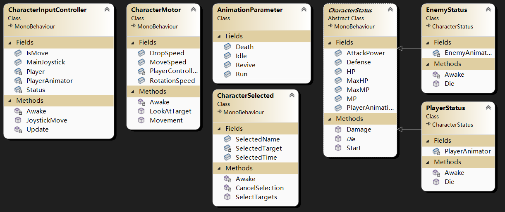

# 观前提醒
项目会在 GitHub 中开源，链接：https://github.com/Maikire/Unity/tree/main/UnityFramework/A simple ARPG character framework
# 框架设计
- 角色状态类：角色的基础信息和基础行为（抽象类）
- 角色的动画：因为动画参数的名字可能会改变，所以单独做一个类储存名字
- 角色的移动方式：提供移动的方法，由输入控制类调用
- 输入控制：处理玩家的输入方式，例如：摇杆、键鼠、手柄......（本章以这个摇杆为例）
- 角色选择器（可选）：选中目标后显示选中特效

# 代码
# 动画信息类
储存动画的名字
using UnityEngine; | |
namespace Character | |
{ | |
// 可序列化，将当前对象 “嵌入” 到脚本后，可以在编辑器中显示属性 | |
// 对应的，这将生成一个对象，不需要手动 new AnimationParameter () | |
[System.Serializable] | |
/// <summary> | |
/// AnimationParameter | |
/// </summary> | |
public class AnimationParameter | |
{ | |
[Tooltip("跑步")] | |
public string Run = "run"; | |
[Tooltip("死亡")] | |
public string Death = "death"; | |
[Tooltip("闲置")] | |
public string Idle = "idle"; | |
[Tooltip("复活")] | |
public string Revive = "revive"; | |
} | |
} |
# 角色状态类
基础信息和基础行为
using UnityEngine; | |
namespace Character | |
{ | |
/// <summary> | |
/// CharacterStatus | |
/// </summary> | |
public abstract class CharacterStatus : MonoBehaviour | |
{ | |
[Tooltip("动画信息")] | |
public AnimationParameter PlayerAnimationParameter; | |
[Tooltip("最大生命值")] | |
public float MaxHP = 500; | |
[Tooltip("生命值")] | |
public float HP = 500; | |
[Tooltip("最大魔力")] | |
public float MaxMP = 500; | |
[Tooltip("魔力")] | |
public float MP = 500; | |
[Tooltip("防御力")] | |
public float Defense = 5; | |
[Tooltip("攻击力")] | |
public float AttackPower = 10; | |
public void Start() | |
{ | |
HP = MaxHP; | |
MP = MaxMP; | |
} | |
/// <summary> | |
/// 受伤 | |
/// </summary> | |
/// <param name="damage"> 伤害值 & lt;/param> | |
public virtual void Damage(float damage) | |
{ | |
float temp = damage - Defense; | |
if (temp > 0) | |
{ | |
HP -= temp; | |
} | |
if (HP <= 0) | |
{ | |
Die(); | |
} | |
} | |
/// <summary> | |
/// 死亡 | |
/// </summary> | |
public abstract void Die(); | |
} | |
} |
# 角色的移动方式
提供移动的方法，由输入控制类调用
using UnityEngine; | |
namespace Character | |
{ | |
/// <summary> | |
/// CharacterMotor | |
/// </summary> | |
public class CharacterMotor : MonoBehaviour | |
{ | |
private CharacterController PlayerController; | |
[Tooltip("移动速度")] | |
public float MoveSpeed = 3; | |
[Tooltip("转向速度")] | |
public float RotationSpeed = 10; | |
[Tooltip("下落速度")] | |
public float DropSpeed = 1; | |
private void Awake() | |
{ | |
PlayerController = this.GetComponent<CharacterController>(); | |
} | |
/// <summary> | |
/// 注视目标方向旋转 | |
/// </summary> | |
/// <param name="direction"> 方向 & lt;/param> | |
public void LookAtTarget(Vector3 direction) | |
{ | |
this.transform.rotation = Quaternion.Slerp(this.transform.rotation, Quaternion.LookRotation(direction), Time.deltaTime * RotationSpeed); | |
} | |
/// <summary> | |
/// 移动 | |
/// </summary> | |
/// <param name="direction"> 方向 & lt;/param> | |
public void Movement(Vector3 direction) | |
{ | |
Vector3 fix = direction + Vector3.down * DropSpeed; | |
PlayerController.Move(fix * Time.deltaTime * MoveSpeed); | |
} | |
} | |
} |
# 输入控制
处理玩家的输入
using UnityEngine; | |
namespace Character | |
{ | |
[RequireComponent(typeof(CharacterMotor), typeof(PlayerStatus))] | |
/// <summary> | |
/// CharacterInputController | |
/// </summary> | |
public class CharacterInputController : MonoBehaviour | |
{ | |
[Tooltip("Joystick")] | |
public VariableJoystick MainJoystick; | |
[HideInInspector] | |
[Tooltip("true：角色可以移动")] | |
public bool IsMove; | |
private CharacterMotor Player; | |
private PlayerStatus Status; | |
private Animator PlayerAnimator; | |
private void Awake() | |
{ | |
Player = this.GetComponent<CharacterMotor>(); | |
Status = this.GetComponent<PlayerStatus>(); | |
PlayerAnimator = this.GetComponentInChildren<Animator>(); | |
} | |
private void Start() | |
{ | |
IsMove = true; | |
} | |
private void Update() | |
{ | |
JoystickMove(); | |
} | |
/// <summary> | |
/// 调用移动 | |
/// </summary> | |
public void JoystickMove() | |
{ | |
if (Status.HP <= 0 || !IsMove) return; | |
Vector3 direction = Vector3.forward * MainJoystick.Vertical + Vector3.right * MainJoystick.Horizontal; | |
if (direction != Vector3.zero) | |
{ | |
// 旋转 | |
Player.LookAtTarget(direction); | |
// 移动 | |
Player.Movement(direction); | |
// 移动动画 | |
PlayerAnimator.SetBool(Status.PlayerAnimationParameter.Run, true); | |
PlayerAnimator.SetBool(Status.PlayerAnimationParameter.Idle, false); | |
} | |
else | |
{ | |
// 闲置动画 | |
PlayerAnimator.SetBool(Status.PlayerAnimationParameter.Idle, true); | |
PlayerAnimator.SetBool(Status.PlayerAnimationParameter.Run, false); | |
} | |
} | |
} | |
} |
# 角色选择器（可选）
- 选中目标后显示选中特效（选中特效是一个预制件，名字为 SelectTarget）
- 使用变换组件助手类找出目标
代码如下：
using Common; | |
using System.Collections; | |
using System.Collections.Generic; | |
using UnityEngine; | |
namespace Character | |
{ | |
/// <summary> | |
/// 角色选择器 | |
/// 添加给有选择功能的角色 | |
/// </summary> | |
public class CharacterSelected : MonoBehaviour | |
{ | |
//1. 选中目标（启用目标的一个子物体用来表示选中），间隔指定时间后取消选中（禁用这个子物体） | |
//2. 选中 A 目标，在自动取消选中前，如果选中 B 目标，则立即取消选中 A 目标并选中 B 目标 | |
//3. 选中 A 目标，在自动取消选中前，如果继续选中 A 目标， | |
[Tooltip("选中特效的名字")] | |
public string SelectedName = "SelectTarget"; | |
[Tooltip("选中时间")] | |
public float SelectedTime = 3; | |
private List<Transform> SelectedTarget; // 上一群被选中的目标的选中特效 | |
private void Start() | |
{ | |
SelectedTarget = new List<Transform>(); | |
} | |
/// <summary> | |
/// 选中目标，开启选中特效 | |
/// </summary> | |
/// <param name="targets"> 目标 & lt;/param> | |
/// <param name="time"> 选中时间 & lt;/param> | |
public void SelectTargets(Transform[] targets) | |
{ | |
if (targets == null) | |
{ | |
return; | |
} | |
// 禁用上一群被选中的目标的选中特效 | |
foreach (var item in SelectedTarget) | |
{ | |
item.gameObject.SetActive(false); | |
} | |
// 刷新目标 | |
Transform[] Selected = new Transform[targets.Length]; | |
for (int i = 0; i < targets.Length; i++) | |
{ | |
Selected[i] = TransformHelper.FindChildByName(targets[i], SelectedName); | |
Selected[i].gameObject.SetActive(true); | |
} | |
// 刷新协程 | |
this.StopAllCoroutines(); | |
this.StartCoroutine(CancelSelection(Selected, SelectedTime)); | |
// 刷新选中特效列表 | |
SelectedTarget.Clear(); | |
SelectedTarget.AddRange(Selected); | |
} | |
/// <summary> | |
/// 指定时间后自动取消选中 | |
/// </summary> | |
/// <param name="target"></param> | |
/// <param name="time"></param> | |
/// <returns></returns> | |
private IEnumerator CancelSelection(Transform[] Selected, float time) | |
{ | |
yield return new WaitForSeconds(time); | |
foreach (Transform selected in Selected) | |
{ | |
selected.gameObject.SetActive(false); | |
} | |
} | |
#region 使用Update实现（当前脚本自动禁用） | |
//private float HidTime; | |
//public void SetSelectedActive(bool status, float time) | |
//{ | |
// //....SetActive (status); // 设置物体激活 | |
// this.enabled = status; // 设置当前脚本的激活状态 | |
// if (status) | |
// { | |
// HidTime = Time.time + time; | |
// } | |
//} | |
//private void Update() | |
//{ | |
// if (HidTime <= Time.time) | |
// { | |
// SetSelectedActive(false, 0); | |
// } | |
//} | |
#endregion | |
} | |
} |
# 玩家状态类
- 继承角色状态类
代码如下：
using UnityEngine; | |
namespace Character | |
{ | |
/// <summary> | |
/// PlayerStatus | |
/// </summary> | |
public class PlayerStatus : CharacterStatus | |
{ | |
private Animator PlayerAnimator; | |
private void Awake() | |
{ | |
PlayerAnimator = this.transform.GetComponentInChildren<Animator>(); | |
} | |
/// <summary> | |
/// 死亡 | |
/// </summary> | |
public override void Die() | |
{ | |
PlayerAnimator.SetBool(PlayerAnimationParameter.Death, true); | |
} | |
} | |
} |
# 敌人状态类
- 继承角色状态类
代码如下：
using UnityEngine; | |
namespace Character | |
{ | |
/// <summary> | |
/// EnemyStatus | |
/// </summary> | |
public class EnemyStatus : CharacterStatus | |
{ | |
private Animator EnemyAnimator; | |
private void Awake() | |
{ | |
EnemyAnimator = this.transform.GetComponentInChildren<Animator>(); | |
} | |
/// <summary> | |
/// 死亡 | |
/// </summary> | |
public override void Die() | |
{ | |
EnemyAnimator.SetBool(PlayerAnimationParameter.Death, true); | |
} | |
} | |
} |